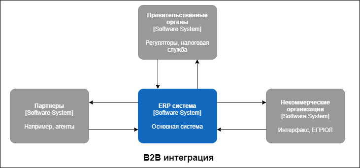
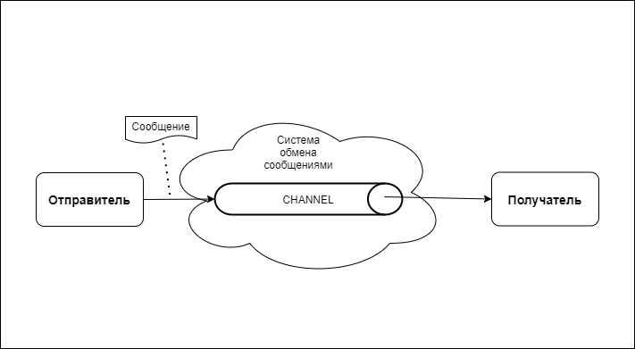

Современные предприятия используют тысячи приложений. Многие из них являются "коробочными", некоторые из них являются собственными приложениями, а некоторые являются устаревшими приложениями, которые были частью предприятия в течение очень долгого времени. Из за огромного количества приложений, сотрудники физически не могут получить доступ к каждому из них по отдельности.
Почему на предприятии требуется так много приложений? Ответ на этот вопрос заключается в том, что каждое предприятие имеет тысячи бизнес-функций, которые невозможно выполнить с помощью одного приложения. Даже комплексные ERP системы обеспечивают очень ограниченные функции по сравнению с реальными потребностями предприятия.
Еще одной причиной большого разнообразия приложений является желание обеспечить неприрывность функционирования предприятия, чтобы остановка одного приложения (например, период обслуживания) не влияла на организацию в целом
Поставщики на рынке традиционно поставляли приложения, ориентированные на удовлетворение потребностей конкретных бизнес-функций. Однако в связи с динамикой изменения различных бизнес-функций поставщики пытаются интегрировать множество функций в одно бизнес-приложение и границы приложений становятся размытыми
В современном мире существует множество новых парадигм, таких как приложения для социальных сетей, приложения на базе Интернета вещей (IoT), облачные приложения, микросервисовисные приложения и так далее. Чтобы обеспечить беспрепятственный обмен данными и поддержку сквозных бизнес-процессов на предприятии, необходимо реализовать интеграцию всех приложений. Разнообразие типов приложений привело к необходимости разработки формулировки принципов и стандартных подходов организации интеграционной платформы, чтобы оставаться конкурентоспособными в условиях современной динамики постоянно меняющегося мира и, соответственно, ожиданий клиентов
В этой области нет простых путей решения, современное предприятие существует в сложном меняющемся мире. Нет готовых фреймворков и кода которые можно было бы просто применить и получить интегрированное комплексное приложение из нескольких, но шаблоны предлагают типовые подходы к решению возникающих проблем и за счет этого облегчают задачу интеграции.
Понятие интеграции - это очень широкая область. Однако наиболее распространенными сценариями интеграции на предприятиях являются следующие:
Рассмотрим подробнее некоторые сценарии
Современным предприятиям необходимо взаимодействовать с внешним по отношению к их экосистеме миром. И это не только клиенты, это и поставщики и регулирующие органы и так далее. Часто возникает необходимость дать партнерам доступ к какому то внутреннему сервису либо наоборот получить данные из сервиса партнера. Такие сценарии приводят к возникновению ситуаций, требующих интеграции между предприятиями. Это не такая простая задача, как интеграция приложений внутри предприятия. В первую очередь это связано с тем, что приходится учитывать множество аспектовбезопасности, возможных юридических последствий и так далее.
Все интеграционные решения в той или иной мере сталкиваются со следующими проблемами"
Со временем, разработчики выработали несколько типовых подходов к решению проблем корпоративной интеграции:
В данном случае файл является основным режимом передачи данных между приложениями, которые необходимо интегрировать. Одно приложение выполнит операцию записи в файл, который будет прочитан другим приложением. Однако для того, чтобы это произошло успешно и оказало необходимое воздействие, участвующим приложениям важно согласовать следующее:
В этом случае база данных становится точкой, в которой происходит интеграция. Несколько приложений, которые необходимо интегрировать, используют общую схему базы данных, которая находится в одной базе данных. Это предотвращает дублирование данных и исключает необходимость передачи данных из одного приложения в другое.
В этом случае интеграция приложений происходит через некоторый функциональный интерфейс, предоставляемые одним из приложений. Другие приложения получают удаленный доступ к этим функциям в виде удаленной процедуры. Процесс вызова этих функциональных возможностей в виде удаленной процедуры называется удаленным вызовом процедуры (RPC). Удаленный вызов процедуры происходит в режиме реального времени и представляет собой синхронную связь.
В этом случае интеграция приложений происходит посредством обмена сообщениями. Одно из приложений публикует сообщение в канале обмена сообщениями, доступном для всех других приложений. Другие приложения получают доступ к каналу обмена сообщениями и получают сообщение в какой-то более поздний момент времени. Единственным критерием здесь является то, что задействованные приложения должны иметь заранее определенное соглашение о канале обмена сообщениями и формате сообщения, которое отправляется на этот канал.
Обмен сообщениями - это надежный метод соединения приложений с помощью концепции пакетов, называемых сообщениями. Эти пакеты отправляются по каналам, которые представляют собой логические пути, обеспечивающие взаимосвязь между приложениями. Эти каналы также называются очередями. Несколько сообщений могут быть помещены в очередь в канале и могут быть доступны нескольким приложениям одновременно. Существует два основных типа ролей для обмена сообщениями:
Отправитель - это приложение, размещающее сообщение в канал. Получатель - это приложение, которое считывает сообщение из канала. Обмен сообщениями - это асинхронный способ связи, означающий, что получателю нет необходимости считывать сообщение из канала сразу после отправки.
Сообщение может представлять собой любую структуру данных, такую как массив, строка или объект. Каждое сообщение состоит из двух частей:
Заголовок содержит метаданные о сообщении, такие как сведения об отправителе, получателе, временная метка и т.д. Эта информация используется системой обмена сообщениями, но обычно игнорируется приложениями. Тело сообщения содержит фактические данные, которые отправляются приложением. Основная часть сообщения игнорируется системой обмена сообщениями, но используется приложениями.
Возможности обмена сообщениями предоставляются системе специализированным программным обеспечением, называемым message-oriented middleware (MOM). MOM также называют системой обмена сообщениями. MOM требуется для обеспечения бесперебойной передачи сообщений между приложениями. Одной из основных причин существования MOM является ненадежное состояние сетей, соединяющих системы. Даже если приложение отправляет сообщение, оно необязательно дойдет до адресата. MOM помогает преодолеть эту эту проблему, и обеспечивает повторную передачу сообщения до тех пор, пока оно не достигнет адресата. Взаимодействие приложений посредством обмена сообщениями показано на следующей диаграмме:
передача сообщения включает пять последовательных шагов: